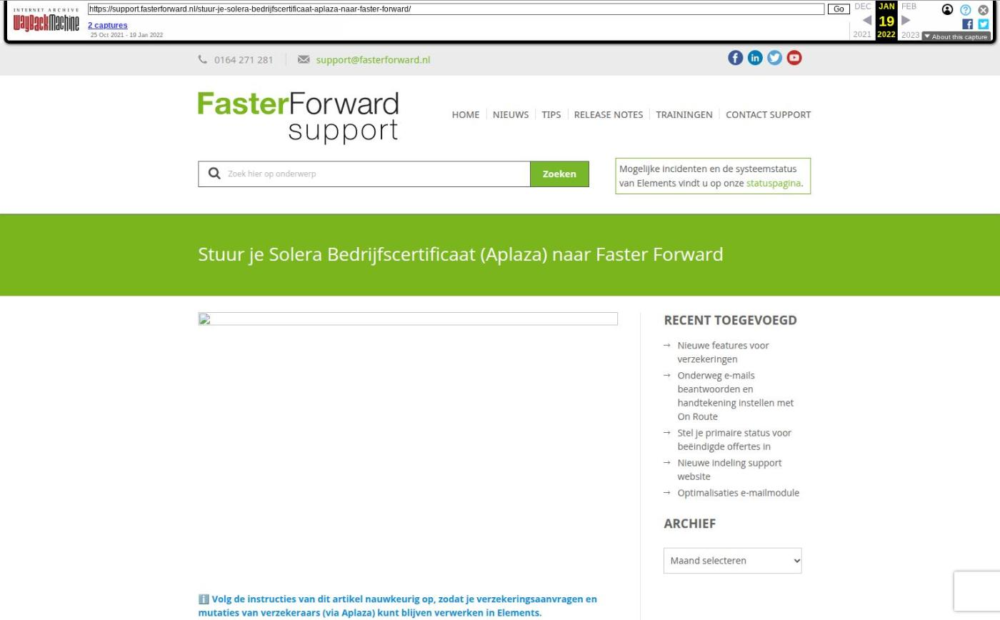

Stuur je Solera Bedrijfscertificaat (Aplaza) naar Faster Forward

Tekstinhoud
ℹ️ Volg de instructies van dit artikel nauwkeurig op, zodat je verzekeringsaanvragen en mutaties van verzekeraars (via Aplaza) kunt blijven verwerken in Elements.
De verzekeringsbranche gaat afscheid nemen van het gebruik van het Persoonlijke Digitaal Paspoort. Dit paspoort, dat onder andere wordt gebruikt om in te loggen op de portalen van verzekeraars en om met Aplaza te werken, voldoet niet meer aan de huidige beveiligingseisen. Onder regie van SIVI is in de verzekeringsbranche een traject gestart waarin het Digitaal Paspoort wordt vervangen. Klik hier voor meer informatie.
Vanaf 7 januari 2022 is het niet meer mogelijk om met het Digitaal Paspoort te werken. Digidentity, de leverancier van het Digitaal Paspoort, stopt met het beschikbaar stellen van het Digitaal Paspoort. Reeds verstrekte Digitale Paspoorten werken niet meer na 7 januari 2022. Stap daarom over op een Bedrijfscertificaat.
Wat nu?
Om via Aplaza gegevens op te halen en automatisch te verwerken in Elements wordt het Bedrijfscertificaat de enige standaard. Dit certificaat wordt geleverd door Solera.
Heb je al een bedrijfscertificaat?
Heb je als kantoor al een Bedrijfscertificaat van Solera in gebruik?
Ga dan direct naar stap 2A.
Weet je niet zeker of jouw kantoor al in het bezit is van een Bedrijfscertificaat?
De beheerder van het Solera Selfserviceportaal van jouw kantoor kan dit voor je nagaan. Je kan ook contact opnemen met Solera via hun contactformulier of bellen met de Solera Servicedesk op 088-6006400.
Als je nog geen bedrijfscertificaat hebt:
Stap 1: Vraag een Bedrijfscertificaat aan.
Dit doe je bij Solera met dit formulier. Je ontvangt vervolgens van Solera een code (in 2 delen) voor het ophalen van jouw certificaat. Alle informatie van Solera over het Bedrijfscertificaat met verwijzingen naar het aanvraagformulier, de ABC tool die nodig is om het Bedrijfscertificaat op te halen en naar de veel gestelde vragen vindt u op deze pagina van Solera.
Als je je bedrijfscertificaat hebt ontvangen, ga dan naar stap 2B.
Stap 2: Stuur je bedrijfscertificaat naar Faster Forward
A. Ik had al een bedrijfscertificaat opgestuurd
Als je al een bedrijfscertificaat bezit en naar Faster Forward hebt opgestuurd (om een koppeling met ADN in te richten), hoef je geen nieuw certificaat aan te vragen. Dit certificaat gebruikt Faster Forward dan nu ook om de Aplaza koppeling in te richten. Als dit het geval is, ontvang je hier voor 11 oktober een e-mail van.
ℹ️ Let wel op dat je het bedrijfscertificaat bij de extranetten van de maatschappijen uploadt. Zie hier voor stap 3.
B. Ik heb een nieuw bedrijfscertificaat
Heb je een nieuw bedrijfscertificaat aangevraagd? Verstuur het bedrijfscertificaat dan (in .abc extensie) naar support@fasterforward.nl. (Verstuur hierbij ook het bijbehorende wachtwoord die je hebt ingevoerd in de ABC Tool van Solera per sms naar 06-14698266. Zie onderstaande screenshot.)
Stap 3: Registreer je bedrijfscertificaat bij a.s.r. en Nationale-Nederlanden
Werk je met a.s.r. en/of Nationale-Nederlanden? Volg dan de onderstaande instructies voor het koppelen van uw Bedrijfscertificaat aan je account op a.s.r. Cockpit respectievelijk adviseur.nn.nl. Voor de overige maatschappijen regelt Aplaza de koppeling.
ℹ️ Let op: Voor het koppelen van het bedrijfscertificaat bij de maatschappij, moet het certificaat ingericht zijn in jouw browser.
Registreer je bedrijfscertificaat op Cockpit (a.s.r.). Klik hier voor een instructie.
Registreer je bedrijfscertificaat op adviseur.nn.nl. Klik hier voor een instructie.
Stap 4: Faster Forward richt je bedrijfscertificaat in
Wanneer het bedrijfscertificaat bij ons bekend is of naar ons is verstuurd, gaan we hier mee aan de slag. Wanneer dit is ingericht, informeren wij je hierover.
Geplaatst op 7 oktober 2021 (Laatste update: 02 november 2021)